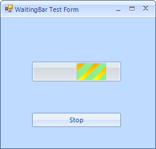

Customizing RadWaitingBar
RadWaitingBar introduces rich API which allows you to easily customize
the visual appearance of RadWaitingBar programmatically. Below you will find scenarios that
will increase your knowledge about RadWaitingBar's API, hence you will be able to
customize it according to your requirements.
How to customize the text of RadWaitingBar
The text of RadWaitingBar is not displayed by default. To show the text, set the
ShowText property of RadWaitingBar to true.
To change the text content, use the
Text property of RadWaitingBar. To customize the text orientation,
set the
AngleTransform property of the RadWaitingBarElement.TextElement.
To modify the text position,
change the TextAlignment property of RadWaitingBarElement.TextElement.
Here is a sample snippet:
[C#]
this.radWaitingBar1.ShowText = true;
this.radWaitingBar1.Text = "Waiting...";
this.radWaitingBar1.WaitingBarElement.TextElement.AngleTransform = 180;
this.radWaitingBar1.WaitingBarElement.TextElement.TextAlignment = ContentAlignment.MiddleLeft;
[VB.NET]
Me.RadWaitingBar1.ShowText = True
Me.RadWaitingBar1.Text = "Waiting..."
Me.RadWaitingBar1.WaitingBarElement.TextElement.AngleTransform = 180
Me.RadWaitingBar1.WaitingBarElement.TextElement.TextAlignment = ContentAlignment.MiddleLeft
'#End Region
'#Region dash
Me.RadWaitingBar1.WaitingStyle = Telerik.WinControls.Enumerations.WaitingBarStyles.Dash
Dim dash As WaitingBarSeparatorElement = Me.RadWaitingBar1.WaitingBarElement.SeparatorElement
dash.NumberOfColors = 2
dash.BackColor = Color.Orange
dash.BackColor2 = Color.Yellow
dash.SweepAngle = 45
dash.StepWidth = 15
dash.SeparatorWidth = 10
dash.GradientPercentage = 0.25F
'#End Region
'#Region "waitingIndicators"
Me.RadWaitingBar1.WaitingBarElement.Indicators(0).BackColor = Color.LightGreen
Me.RadWaitingBar1.WaitingBarElement.Indicators(0).NumberOfColors = 1
Me.RadWaitingBar1.WaitingBarElement.Indicators(1).BackColor = Color.LightGreen
Me.RadWaitingBar1.WaitingBarElement.Indicators(1).NumberOfColors = 1
Dim separator As WaitingBarSeparatorElement = Me.RadWaitingBar1.WaitingBarElement.Indicators(0).SeparatorElement
Dim helpSeparator As WaitingBarSeparatorElement = Me.RadWaitingBar1.WaitingBarElement.Indicators(1).SeparatorElement
separator.Dash = True
helpSeparator.Dash = True
separator.NumberOfColors = 2
separator.BackColor = Color.Orange
separator.BackColor2 = Color.Yellow
separator.SweepAngle = 45
separator.StepWidth = 15
separator.SeparatorWidth = 10
separator.GradientPercentage = 0.25F
helpSeparator.NumberOfColors = 2
helpSeparator.BackColor = Color.Orange
helpSeparator.BackColor2 = Color.Yellow
helpSeparator.SweepAngle = 45
helpSeparator.StepWidth = 15
helpSeparator.SeparatorWidth = 10
helpSeparator.GradientPercentage = 0.25F
'#End Region
'#Region shape
Dim shape As New Telerik.WinControls.EllipseShape()
Me.RadWaitingBar1.WaitingBarElement.Shape = shape
Me.RadWaitingBar1.WaitingBarElement.ContentElement.Shape = shape
Me.RadWaitingBar1.WaitingBarElement.Indicators(0).Shape = shape
Me.RadWaitingBar1.WaitingBarElement.Indicators(1).Shape = shape
'#End Region
End Sub
End Class

How to customize RadWaitingBar’s Dash style
To set the RadWaitingBar in dash style set the WaitingStyle
property to Dash.
To customize the appearance of the stripes-pattern, you need to access
the RadWaitingBarElement.SeparatorElement. Here is a sample scenario:
[C#]
this.radWaitingBar1.WaitingStyle = Telerik.WinControls.Enumerations.WaitingBarStyles.Dash;
WaitingBarSeparatorElement dash = this.radWaitingBar1.WaitingBarElement.SeparatorElement;
dash.NumberOfColors = 2;
dash.BackColor = Color.Orange;
dash.BackColor2 = Color.Yellow;
dash.SweepAngle = 45;
dash.StepWidth = 15;
dash.SeparatorWidth = 10;
dash.GradientPercentage = 0.25f;
[VB.NET]
Me.RadWaitingBar1.WaitingStyle = Telerik.WinControls.Enumerations.WaitingBarStyles.Dash
Dim dash As WaitingBarSeparatorElement = Me.RadWaitingBar1.WaitingBarElement.SeparatorElement
dash.NumberOfColors = 2
dash.BackColor = Color.Orange
dash.BackColor2 = Color.Yellow
dash.SweepAngle = 45
dash.StepWidth = 15
dash.SeparatorWidth = 10
dash.GradientPercentage = 0.25F
'#End Region
'#Region "waitingIndicators"
Me.RadWaitingBar1.WaitingBarElement.Indicators(0).BackColor = Color.LightGreen
Me.RadWaitingBar1.WaitingBarElement.Indicators(0).NumberOfColors = 1
Me.RadWaitingBar1.WaitingBarElement.Indicators(1).BackColor = Color.LightGreen
Me.RadWaitingBar1.WaitingBarElement.Indicators(1).NumberOfColors = 1
Dim separator As WaitingBarSeparatorElement = Me.RadWaitingBar1.WaitingBarElement.Indicators(0).SeparatorElement
Dim helpSeparator As WaitingBarSeparatorElement = Me.RadWaitingBar1.WaitingBarElement.Indicators(1).SeparatorElement
separator.Dash = True
helpSeparator.Dash = True
separator.NumberOfColors = 2
separator.BackColor = Color.Orange
separator.BackColor2 = Color.Yellow
separator.SweepAngle = 45
separator.StepWidth = 15
separator.SeparatorWidth = 10
separator.GradientPercentage = 0.25F
helpSeparator.NumberOfColors = 2
helpSeparator.BackColor = Color.Orange
helpSeparator.BackColor2 = Color.Yellow
helpSeparator.SweepAngle = 45
helpSeparator.StepWidth = 15
helpSeparator.SeparatorWidth = 10
helpSeparator.GradientPercentage = 0.25F
'#End Region
'#Region shape
Dim shape As New Telerik.WinControls.EllipseShape()
Me.RadWaitingBar1.WaitingBarElement.Shape = shape
Me.RadWaitingBar1.WaitingBarElement.ContentElement.Shape = shape
Me.RadWaitingBar1.WaitingBarElement.Indicators(0).Shape = shape
Me.RadWaitingBar1.WaitingBarElement.Indicators(1).Shape = shape
'#End Region
End Sub
End Class

How to set Dash style only for the waiting indicators
The waiting indicators also support dash style. To customize the appearance of
the indicators’ stripes-pattern, you need to access the SeparatorElements of all indicators.
By default, the Indicators collection contains two indicators. Here is a sample scenario:
[C#]
this.radWaitingBar1.WaitingBarElement.Indicators[0].BackColor = Color.LightGreen;
this.radWaitingBar1.WaitingBarElement.Indicators[0].NumberOfColors = 1;
this.radWaitingBar1.WaitingBarElement.Indicators[1].BackColor = Color.LightGreen;
this.radWaitingBar1.WaitingBarElement.Indicators[1].NumberOfColors = 1;
WaitingBarSeparatorElement separator = this.radWaitingBar1.WaitingBarElement.Indicators[0].SeparatorElement;
WaitingBarSeparatorElement helpSeparator = this.radWaitingBar1.WaitingBarElement.Indicators[1].SeparatorElement;
separator.Dash = true;
helpSeparator.Dash = true;
separator.NumberOfColors = 2;
separator.BackColor = Color.Orange;
separator.BackColor2 = Color.Yellow;
separator.SweepAngle = 45;
separator.StepWidth = 15;
separator.SeparatorWidth = 10;
separator.GradientPercentage = 0.25f;
helpSeparator.NumberOfColors = 2;
helpSeparator.BackColor = Color.Orange;
helpSeparator.BackColor2 = Color.Yellow;
helpSeparator.SweepAngle = 45;
helpSeparator.StepWidth = 15;
helpSeparator.SeparatorWidth = 10;
helpSeparator.GradientPercentage = 0.25f;
[VB.NET]
Me.RadWaitingBar1.WaitingBarElement.Indicators(0).BackColor = Color.LightGreen
Me.RadWaitingBar1.WaitingBarElement.Indicators(0).NumberOfColors = 1
Me.RadWaitingBar1.WaitingBarElement.Indicators(1).BackColor = Color.LightGreen
Me.RadWaitingBar1.WaitingBarElement.Indicators(1).NumberOfColors = 1
Dim separator As WaitingBarSeparatorElement = Me.RadWaitingBar1.WaitingBarElement.Indicators(0).SeparatorElement
Dim helpSeparator As WaitingBarSeparatorElement = Me.RadWaitingBar1.WaitingBarElement.Indicators(1).SeparatorElement
separator.Dash = True
helpSeparator.Dash = True
separator.NumberOfColors = 2
separator.BackColor = Color.Orange
separator.BackColor2 = Color.Yellow
separator.SweepAngle = 45
separator.StepWidth = 15
separator.SeparatorWidth = 10
separator.GradientPercentage = 0.25F
helpSeparator.NumberOfColors = 2
helpSeparator.BackColor = Color.Orange
helpSeparator.BackColor2 = Color.Yellow
helpSeparator.SweepAngle = 45
helpSeparator.StepWidth = 15
helpSeparator.SeparatorWidth = 10
helpSeparator.GradientPercentage = 0.25F
'#End Region
'#Region shape
Dim shape As New Telerik.WinControls.EllipseShape()
Me.RadWaitingBar1.WaitingBarElement.Shape = shape
Me.RadWaitingBar1.WaitingBarElement.ContentElement.Shape = shape
Me.RadWaitingBar1.WaitingBarElement.Indicators(0).Shape = shape
Me.RadWaitingBar1.WaitingBarElement.Indicators(1).Shape = shape
'#End Region
End Sub
End Class

How to customize the shape of RadWatingBar
Different shapes can be applied to both the WaitingBarElement and
the waiting indicator. In the following example
the WaitingBarElement and the waiting indicator have elliptical shape:
[C#]
Telerik.WinControls.EllipseShape shape = new Telerik.WinControls.EllipseShape();
this.radWaitingBar1.WaitingBarElement.Shape = shape;
this.radWaitingBar1.WaitingBarElement.ContentElement.Shape = shape;
this.radWaitingBar1.WaitingBarElement.Indicators[0].Shape = shape;
this.radWaitingBar1.WaitingBarElement.Indicators[1].Shape = shape;
[VB.NET]
Dim shape As New Telerik.WinControls.EllipseShape()
Me.RadWaitingBar1.WaitingBarElement.Shape = shape
Me.RadWaitingBar1.WaitingBarElement.ContentElement.Shape = shape
Me.RadWaitingBar1.WaitingBarElement.Indicators(0).Shape = shape
Me.RadWaitingBar1.WaitingBarElement.Indicators(1).Shape = shape
'#End Region
End Sub
End Class